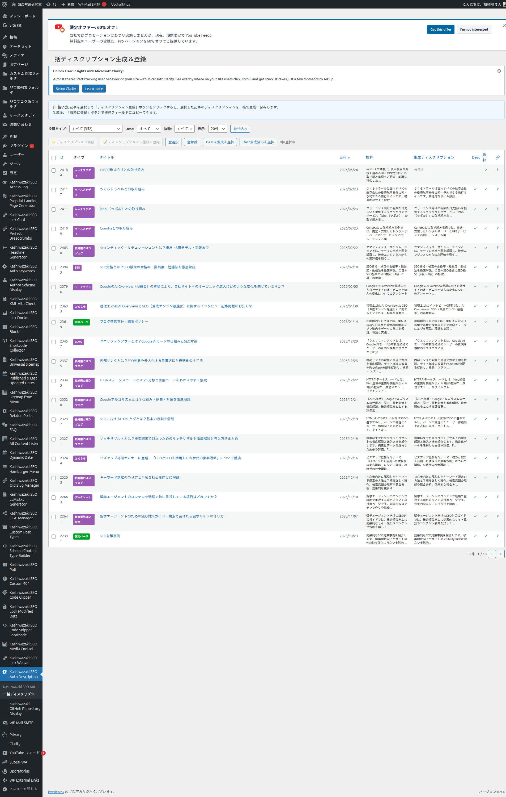
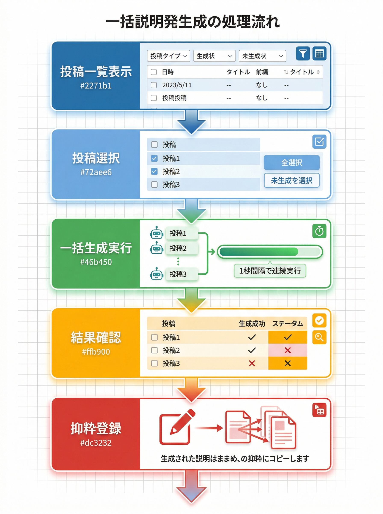

一括ディスクリプション生成
複数の投稿に対してAIディスクリプションを一括生成し、抜粋フィールドに登録する機能を解説します。
一括生成画面の概要
フィルター＆ソート
投稿タイプ・生成状態・抜粋状態でフィルター。ID・タイトル・日付等でソート
一括AI生成
選択した投稿を順番にAI処理。プログレスバーとリアルタイムログ付き
抜粋一括登録
生成済みディスクリプションを投稿の抜粋フィールドに一括コピー
一括生成画面

フィルター機能
| フィルター | 選択肢 | 説明 |
|---|---|---|
| 投稿タイプ | すべて / 個別タイプ | 対象の投稿タイプで絞り込み |
| Desc | すべて / 生成済み / 未生成 | ディスクリプション生成状態で絞り込み |
| 抜粋 | すべて / あり / なし | 抜粋フィールドの有無で絞り込み |
| 表示件数 | 20 / 50 / 100 / すべて | 1ページの表示件数 |
投稿の選択方法
| ボタン | 動作 |
|---|---|
| 全選択 | 表示中の全投稿を選択 |
| 全解除 | すべてのチェックを外す |
| Desc未生成を選択 | ディスクリプション未生成の投稿のみ選択 |
| Desc生成済みを選択 | ディスクリプション生成済みの投稿のみ選択 |
一括生成の実行手順
1
フィルターで対象投稿を絞り込む
2
チェックボックスまたはショートカットボタンで投稿を選択
3
「✨ ディスクリプション生成」ボタンをクリック
4
プログレスバーとログがリアルタイム表示される（1秒間隔で順次処理）
5
全件完了後、各投稿のステータスが ✓（成功）/ ✗（失敗）で更新される
抜粋への一括登録
1
ディスクリプション生成済みの投稿を選択（「Desc生成済みを選択」ボタンが便利）
2
「📝 ディスクリプション→抜粋に登録」ボタンをクリック
3
確認ダイアログで「OK」をクリック
4
生成済みディスクリプションが各投稿のexcerptフィールドにコピーされる
大量の投稿を処理する場合は、フィルターで「未生成」に絞り込んでから一括生成すると効率的です。処理中はブラウザのタブを閉じないでください。
一括生成の処理フロー
